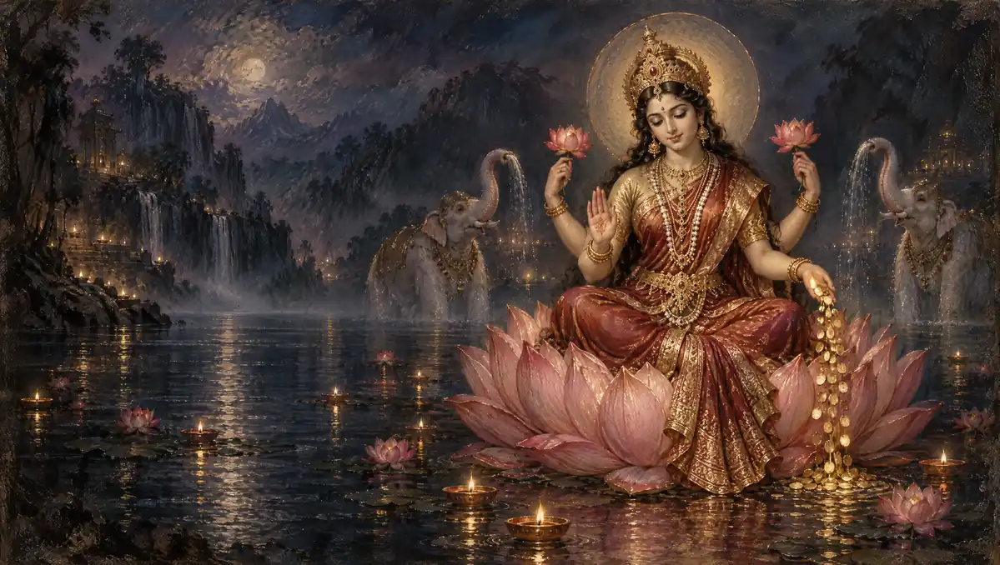

Goddess Lakshmi
Shree Suktam
The Vedic hymn that invites Lakshmi, golden and radiant, into the home.
Begin chantingMeaning & traditionॐ हिरण्यवर्णां हरिणीं सुवर्णरजतस्रजाम् ।
Om. Golden in colour, graceful as a doe, garlanded with gold and silver,चन्द्रां हिरण्मयीं लक्ष्मीं जातवेदो म आवह ॥
radiant as the moon, made of gold: O Jatavedas, bring Lakshmi to me.तां म आवह जातवेदो लक्ष्मीमनपगामिनीम् ।
O Jatavedas, bring to me that Lakshmi who does not depart,यस्यां हिरण्यं विन्देयं गामश्वं पुरुषानहम् ॥
through whom I may gain gold, cattle, horses and people.अर्थ
हे जातवेद (अग्नि), स्वर्ण के समान वर्ण वाली, हरिणी जैसी सुन्दर, सोने और चाँदी की मालाएँ धारण करने वाली, चन्द्रमा जैसी उज्ज्वल, स्वर्णमयी लक्ष्मी को मेरे लिए बुलाइए। उस लक्ष्मी को बुलाइए जो कभी दूर न जाए, जिससे मैं स्वर्ण, गौ, अश्व और जन प्राप्त करूँ।
Oṃ hiraṇyavarṇāṃ hariṇīṃ suvarṇarajatasrajām
Om. Golden in colour, graceful as a doe, garlanded with gold and silver,Candrāṃ hiraṇmayīṃ lakṣmīṃ jātavedo ma āvaha
radiant as the moon, made of gold: O Jatavedas, bring Lakshmi to me.Tāṃ ma āvaha jātavedo lakṣmīmanapagāminīm
O Jatavedas, bring to me that Lakshmi who does not depart,Yasyāṃ hiraṇyaṃ vindeyaṃ gāmaśvaṃ puruṣānaham
through whom I may gain gold, cattle, horses and people.Meaning
Om. Golden in colour, graceful as a doe, garlanded with gold and silver, radiant as the moon, made of gold: O Jatavedas, bring Lakshmi to me. O Jatavedas, bring to me that Lakshmi who does not depart, through whom I may gain gold, cattle, horses and people.
Om hiranyavarnaam harineem suvarnarajatasrajaam
Om. Golden in colour, graceful as a doe, garlanded with gold and silver,Candraam hiranmayeem lakshmeem jaatavedo ma aavaha
radiant as the moon, made of gold: O Jatavedas, bring Lakshmi to me.Taam ma aavaha jaatavedo lakshmeemanapagaamineem
O Jatavedas, bring to me that Lakshmi who does not depart,Yasyaam hiranyam vindeyam gaamashvam purushaanaham
through whom I may gain gold, cattle, horses and people.Meaning (Hinglish)
He Jaatved (Agni), swarn jaise varn vaali, harini jaisi sundar, sone aur chaandi ki maalaayein dhaaran karne vaali, chandramaa jaisi ujjval, swarnamayi Lakshmi ko mere liye bulaaiye. Us Lakshmi ko bulaaiye jo kabhi door na jaaye, jisse main swarn, gau, ashva aur jan praapt karoon.
First two verses of the Shree Suktam, a khila (supplementary) hymn of the Rigveda, shown without Vedic accent marks. The hymn has fifteen verses plus phala-shruti. English meanings are paraphrases; punctuation and Devanagari spelling are normalized.
Your daily mala
One chant, one bead.
Saved on this device. Return whenever you’re ready.
About the Shree Suktam
The Shree Suktam is a Vedic hymn to Lakshmi, recited in Lakshmi puja, on Fridays, during Navratri and at Diwali. Its opening verses call on Agni, the knower of all, to bring the golden, moon-bright Lakshmi who never departs.
Best time to chant: Fridays, Navratri, Diwali and Sharad Purnima.
Benefits of the Shree Suktam
- The Vedic hymn that invites Lakshmi, golden and radiant, into the home.
- Repeated recitation can be used as a practice of attention and devotion.
How to chant the Shree Suktam
- Read each line together with its meaning before beginning.
- Recite the complete prayer slowly, following the script you prefer.
- Use the counter after each complete recitation. Choose a comfortable number of repetitions.
Frequently asked questions
Where does Shree Suktam come from?
First two verses of the Shree Suktam, a khila (supplementary) hymn of the Rigveda, shown without Vedic accent marks. The hymn has fifteen verses plus phala-shruti.
What does one count represent?
One count represents one complete recitation of the prayer displayed on this page. You can choose a short practice or count 108 repetitions.